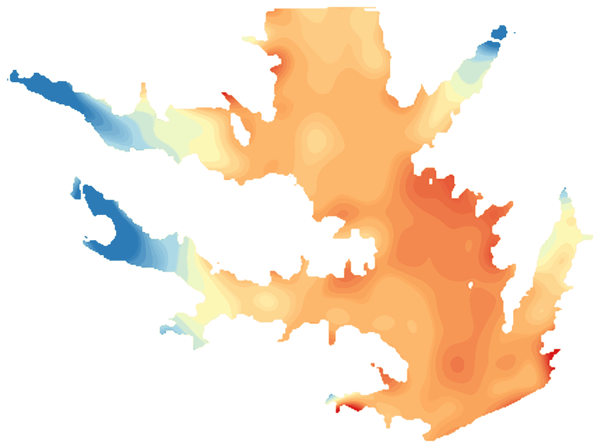

LakeScope › TX
Lake Conroe today
Updated 2026-11-21 - Atlas Labs
Some algae possible, 65°F water, level steady, near normal, calm this morning.
Water level
199.20 ft
USGS gauge 08067600 - 2026-11-21
7-day trend: steady (+0.02 ft). Compared with normal for this date: -0.6 ft (same weeks, 2016-2025).
Water clarity and algae
Some algae possible Last clear view: about a week ago.
Surface temperature
65°F
seen from space on 2026-11-19

Weather, next 3 days
| Day | Sky | High / low | Wind | Rain |
|---|---|---|---|---|
| Saturday | Mostly Sunny | 75 / 62°F | 5 mph SE | 0% |
| Sunday | Widespread Fog then Mostly Sunny | 75 / 54°F | 5 mph W | 15% |
| Monday | Sunny | 67 / 50°F | 10 mph N | 6% |
Sunrise 06:53 - sunset 17:22 - Waxing gibbous. National Weather Service.
Get the LakeScope app: alerts and the 3-D view of Lake Conroe